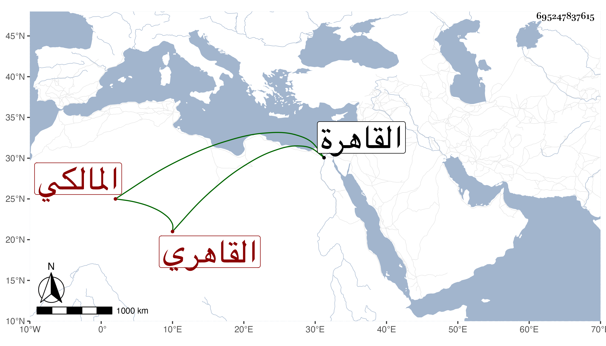

0902Sakhawi.DawLamic.ITO20230111-ara1.EIS1600.695247837615
Biography ID: 695247837615
أحمد بن عبد الخالق بن علي بن الحسن بن عبد العزيز بن محمد بن الفرات الشهاب بن الصدر بن النور البدر القاهري المالكي . كان أبوه من أعيان الموقعين ونشأ هو بالقاهرة فاشتغل بالفقه وأصوله والعربية والطب والأدب ومهر في الفنون العقلية ونظم الشعر الحسن مع لطافة الشكل وبشاشة الوجه وحسن الخلق . قاله شيخنا قال وكانت بيننا مودة سمع معنا من بعض الشيوخ وسمعت من نظمه كثيرا وهو القائل :
| إذا شئت أن تحيا حياة سعيدة | ويستحسن الأقوام منك المقبحا |
| تزي بزي الترك واحفظ لسانهم | وإلا فجانبهم وكن متصولحا |
مات في شوال سنة أربع ولم يدخل في الكهولة . ذكره شيخنا في معجمه وأنبائه ، وقال المقريزي في عقوده أنه كان إذا كتب له البيت من الشعر أو نحوه في ورقة لم يرها ودفعت إليه ويده من تحت ذيله قرأها ويده وثوبه يحول بين بصره وبين رؤيتها إلا أنه يمر بيده على المكتوب خاصة فيقرأ ما كتب في الورقة امتحناه بذلك غير مرة وشاهدت غيره أيضا يفعل مثله انتهى . وحكى لنا الزيني عبد الباسط بن ظهيرة عن شخص من التجار اسمه عمر بن بسيس أنه شاهد هو وغيره منه مثل ذلك .
